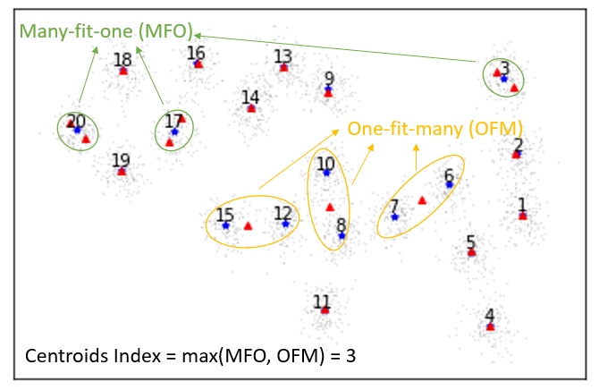
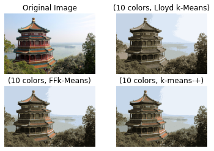

|
Jiazhen Hong I'm a Ph.D. candidate in the Department of Electrical and Computer Engineering at Rutgers University in Piscataway, NJ. At Rutgers I've worked on Integrated Systems & NeuroImaging Laboratory and was advised by Laleh Najafizadeh. I am the principal investigator of project, Improving the Efficiency of EEG-based BCIs and a co-investigator of project, A Study of the Impact of Presence of Physical Pain on BCIs. |

|
ResearchI'm interested in brain-computer interfaces, machine learning, deep learning, electroencephalogram (EEG), and signal processing. |
 
|
A deep learning framework based on dynamic channel selection for early classification of left and right hand motor imagery tasks
Jiazhen Hong, Foroogh Shamsi, Laleh Najafizadeh , EMBC, 2022 IEEE / Rutgers Research Day / Rutgers Brain Health Institute Symposium We introduce a deep learning framework that utilizes dynamic channel selection for early classification of left versus right hand motor imagery (MI) tasks. This approach reduces data dimensionality, thereby accelerating future related brain-computer interface (BCI) technologies. |
|


|
A Geometric Approach to k-means
Jiazhen Hong, Wei Qian, Yudong Chen , Yuqian Zhang , arXiv, 2022 arXiv / We propose a flexible framework for k-means problem by harnessing the geometric structure of local solutions. It provides a theoretical foundation for future work to design detection routines for varying cluster distributions. |
|
Feel free to steal this website's source code. Do not scrape the HTML from this page itself, as it includes analytics tags that you do not want on your own website — use the github code instead. Also, consider using Leonid Keselman's Jekyll fork of this page. |